- Lead
#3B1FD1 - Follower
#14C79A
Design
system.
The artwork, colors and controls behind WSurf. Pick a finish, try a component or take the source into your next change.
The Tandem identity
Two discs share one waterline. Violet stands for the person using WSurf. The smaller mint disc follows their lead and marks the assistant’s activity.


- Lead
#6D55FF - Follower
#2FE0B2
Use the small cut at 24 px and below. Keep a follower’s diameter of clear space around the mark or wordmark. Interface text uses the system font. The outlined wordmark uses Inter Display Bold.
Components
Open a working example to inspect its markup and keyboard behavior. In macOS Settings, use WSurf’s existing SwiftUI rows and native controls.
ButtonPrimary, secondary and text actions
Assistant badgeThinking, acting and waiting
Tandem loaderWorking and reduced-motion states
CalloutExplain a choice and its consequences
Code blockSelectable commands and examples
Feature cardDescribe a product behavior
Site headerWordmark and navigation
CoverEditorial brand composition
Materials in motion
The flat mark identifies WSurf at a glance. The satin and relief studies show the shape in light and shadow.
The illustrated product walkthroughs show a tab arriving in a shared Space and a page moving into a Micro window. Both use sample browsing data.
Asset library
Original files, grouped by use. Dock contains the app’s shipping finishes. Flux and Legacy preserve earlier identity studies.
3D 10 files
3D usage guide


Flux 15 files
Flux usage guide- Figtree-OFL.txt
- lockup-flux-dark.svg
- lockup-flux-light.svg
- mark-bloom-dark.svg
- mark-bloom-light.svg
- mark-ember-dark.svg
- mark-ember-light.svg
- mark-flux-dark.svg
- mark-flux-light.svg
- mark-graphite-dark.svg
- mark-graphite-light.svg
- mark-grove-dark.svg
- mark-grove-light.svg
- mark-tide-dark.svg
- mark-tide-light.svg


Icons 13 files
Icons usage guide


Lockup 7 files
Lockup usage guide


Mark 9 files
Mark usage guide


Mono 10 files
Mono usage guide


Motion 5 files
Motion usage guide
Relief 15 files
Relief usage guide- moon_color.png
- moon_height.png
- moon_normal.png
- planet_clouds.png
- planet_color.png
- planet_height.png
- planet_normal.png
- relief-clay-poster.jpg
- relief-clay.mp4
- relief-earth-moon-480.gif
- relief-earth-moon-poster.jpg
- relief-earth-moon.mp4
- relief-topographic-poster.jpg
- relief-topographic.mp4
- texture-recipe.json


Build with WSurf
Use the same files in a prototype, on the website or in an agent’s brief. Update the kit in the same pull request as a change to the design.
<link rel="stylesheet"
href="/design-system/tokens.css">
<link rel="stylesheet"
href="/design-system/components/bundle.css">
<a class="ws-button ws-button--primary label"
href="/#build">Build WSurf</a>